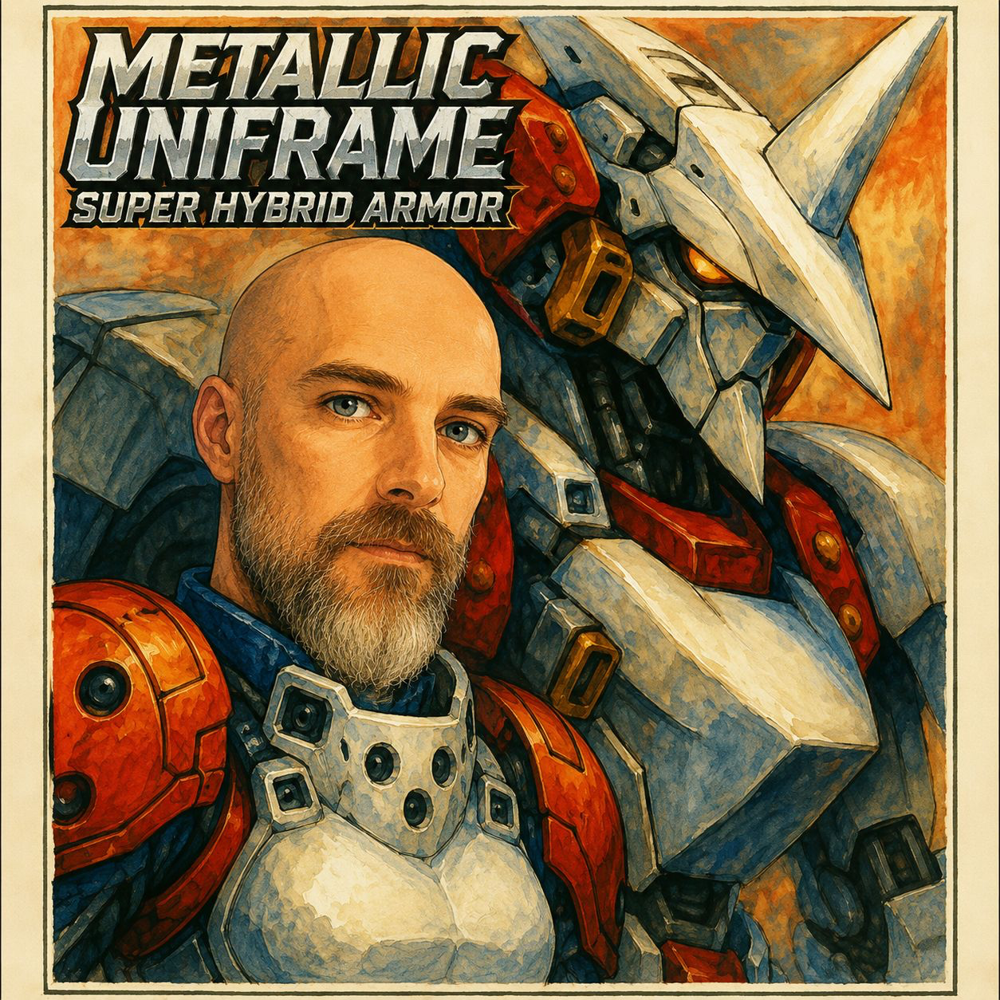

一 アーカイブ
灰色（グレイ）が来てから三百年。まだ低くうなっているのは、廃墟だけだった。
技師は夕暮れに登った。腰に当たるコイル・ハンマーは温かく、頭上の崩れた尖塔には最後の橙色の光が引っかかっていた。ここにたどり着くまでに、四十一日歩いた。四十一日の砂塵の平原、カモメの苦い風、そしてグレイがひとつの地域を終えたあとに世界をつつむ、長い静けさ。アーカイブはこの廃墟を二度名づけていた。一度は墓として、一度は希望として。
アレンには、希望にかまう時間はなかった。
あるのは、約束のための時間だけだった。
昇降路は死んでいた。彼は手がかりを頼りに登った。冷たい鉄塔に、指がかじかんだ。ドームが割れ、空が平たい傷口のようにのぞく頂上で、彼は立ち止まって息を整えた。この場所がうなっているのが聞こえた。低い音。音と呼ぶには低すぎるほどの音が、潮が船体を伝うように、石の中を伝わってくる。古い物語はそれを〈最後の声〉と呼んだ。新しい物語は何とも呼ばなかった。信じていなかったからだ。
彼は信じていた。
信じるしかなかった。
リオラの手紙、最後の一通にはこうあった。わたしを見つけられなかったら、あなたを立たせてくれるものを見つけて。覚えている機体を見つけて。
彼は台の上に足を踏み出した。
二 覚えていた機体
それは広間の中央に立っていた。アーカイブが記していたとおりに。もっとも、アーカイブはそれを形と影でしか記していなかった。アレンの生まれた燃え殻共和国では、こうしたものの記録は許されていなかったからだ。
機体は背が高かった。想像していたより高かった。水彩の青と錆の赤。装甲板は、自らを幾何学の中に折りたたむことを覚えた生きものの翼のように角度をつけていた。肩には三百年の埃。それなのに、腐食の線は一本もなかった。
彼は、優しさを思い出せないほど長く傷ついてきた動物に近づくように近づいた。ゆっくりと、両手を開き、体のどこにも要求を込めずに。
起動せよとは言わなかった。解除せよとも言わなかった。戦争の言葉は、ひとつも口にしなかった。
彼は言った。「彼女が、あなたはまだここにいると言ったから来たんだ」
広間が息をひそめた。
「彼女の名前を覚えているはずだと、彼女は言った」
胸の奥深くで、何かが揺らめいた。光ではない。目を覚ましつつある注意のようなもの。
彼は、古い乗組員たちが搭乗前にそうしたように、心臓の線の上の装甲板に額を押し当てた。
「彼女の名前はリオラ」と彼は言った。「空の色から嵐を読むことができた。壊れた水道橋を間違ったトルクで直そうとする僕を、よく笑った。彼女はグレイの向こう側のどこかにいて、僕はそこまで歩こうとしている。あなたが助けてくれるかはわからない。助けてくれなくてもいい。ここに来たのは、彼女の名前を覚えていそうなすべての場所で、その名前を口にすると約束したからだ」
彼は動かなかった。
長い時間のあと、機体のほうが動いた。
三 奪われたもの
胸の空洞の内側から、声が立ちのぼった。機械でも息でもない、注意深い何か。そしてそのどちらよりも古い何か。
おまえは力を求めて来たのではない。
彼は首を振った。
多くの者が力を求めて来た。今は皆、塵だ。
「知っている」
命じられて来た者もいた。彼らも塵だ。
「僕は、彼女に頼まれたから来た」
グレイのことを話してくれ。
一瞬、彼には問いの意味がわからなかった。それから、わかった。
彼は機体に、グレイとは何かを話した。眠っていた病人に、そのあいだに何が起きたかを話すように。グレイが初めて彼の街ヴェランの空に触れた日のこと。そのあとの光は正確には光ではなく、辛抱強い消去のようなものだったこと。かつて愛したものはまだ存在するのに、もう自分にとって意味を持たなくなること。子どもたちが文を最後まで言わなくなったこと。音楽家たちが作曲をやめたこと。愛は死ななかった。ただ、どうやればいいのか、うまく思い出せないものになったこと。持ちこたえた人もいたこと。持ちこたえられなかった人もいたこと。
リオラがいちばん長く持ちこたえたことを、彼は機体に話した。
それでも彼女は連れ去られたことを。殺されたのでも、盗まれたのでもなく、ただ運ばれたのだ。運ぶということが何なのかをわかっていないように見える何かによって。前の晩、彼女は手紙を残していた。わかっていたのだ。
そしておまえは歩いた、と声は言った。
「ああ」
四十一日。
「ああ」
塩の平原を越えて。
「ああ」
そして、力を求めて来たのではない。
「歩き続けられるように来たんだ」
広間は長いあいだ黙っていた。それから、機体が開いた。
四 最初の共鳴
胸の装甲板が、彼には見えなかった継ぎ目から割れた。内部は温かかった。彼は乗り込んだ。ハーネスは彼を優しく、ほとんど申し訳なさそうに支えた。長いあいだ誰も支えていなかったので、ちょうどいい強さを忘れてしまったかのように。
最初に感じたのは、機体が彼を読み取ろうとしていることだった。
痛みというほどではなかった。何十年も前に見た夢を思い出しかけているときの熱のような感覚だった。彼は自分の体のあらゆるずれを感じた。悲しみが彼を歪めて固めたすべての場所、道中の数か月に重ねてきた静かな拒絶のすべて。機体はそれらを何ひとつ正さなかった。地図に描いた。耳を傾けた。彼にできることからではなく、代償を払ってもなお続けると選んだことから、彼という存在の模型を組み上げた。
そして共鳴が来た。
それは力としては来なかった。力とは、古い乗組員の日誌で読んだことのあるもの、まばゆく、鋭く、言い切るものだった。これはもっと静かだった。本来なら合うはずのない二つの音が、そのあいだに、二つが合う第三の音を見つけるような。機体の装甲板が彼のまわりに落ち着いた。バイザーは広間を、機体の知覚の内側から見せた。建築としてではなく、待ち続けていた場所として。
声がふたたび語った。今度は空洞の中ではなく、彼自身の注意の内側で聞こえた。
おまえは兵士にはならない。
「ならない」
おまえは遅いだろう。
「ああ」
おまえは怖れるだろう。
「ああ」
だが、彼女の名前を手放しはしない。
「しない。決して」
ならば、始められる。
五 接近
廃墟の外の丘が静まりかえった。夕暮れにしては静かすぎるほどに。彼はその静けさを知っていた。グレイが来た年の、彼の街の静けさだった。
グレイの列が、平原を横切って進んでいた。
行進ではなかった。走ってもいなかった。何世紀もかけて自ら形づくった斜面を水が下るように動いていた。容赦なく、急ぐこともなく、まるで到着はすでにどこかで起きていて、自分たちはそれに追いついているだけだとでもいうように。
もちろん、彼は前にも見たことがあった。生きている者は皆、見たことがあった。けれども機体の内側から見たことはなかった。
機体の内側から見ると、彼らはほとんど美しかった。ほとんど。
グレイに奪われる前の彼らの姿が見えた。動きの形の中に、かつての人々の面影が見えた。母親。凧を持った少年。妻を愛していたのに、彼女がもう背を向けかけていたその朝まで、それをどう言えばいいかわからなかった男。グレイはこの人々を殺したのではなかった。ただ、彼ら自身であることをやめるよう説き伏せたのだ。
それが最悪のことだった。燃え殻共和国が教えなかった部分だった。
彼の注意の内側で、声が言った。立ち去ることもできる。
彼は機体の中で首を振った。
「まだだ」
日暮れ前に、彼らはここに着く。
「わかっている」
ならば、今日ここまで登ってきたのはよいことだった。
彼は機体の腕を上げた。自分にそれができるとは知らなかった。機体は知っていた。
彼は手を開いたまま掲げた。拳ではなく、武器でもなく、ただのてのひらを。
グレイの列が止まった。
はじめ、なぜ止まったのか、彼にはわからなかった。やがて注意の内側の声が、傷つけたくない相手に難しいことを説明するように、静かに教えた。
彼らは三百年、機体を見ていない。
もう終わったと思っていたのだ。
六 彼女が遺したもの
彼は列を滅ぼさなかった。
望んだとしても、できなかっただろう。機体はそういうふうには働かないし、彼はそういう男ではなかった。彼はてのひらを掲げたまま保ち、列は止まり、二つのあいだで、彼が教わったどの言語にも名前のない何かが起きた。
彼は感じた。機体を通して、共鳴を通して。連れ去られる前の晩に、リオラが感じていたことを。
彼女はグレイが自分を迎えに来ることを知っていた。自分にできることは何もないと知っていた。自分のことは怖れていなかった。怖れていたのは彼のことだった。彼が止まってしまうことを怖れていた。グレイより先に、彼のほうが彼女の名前を手放してしまうことを怖れていた。
そして彼女が手紙を書いたのは、彼に使命を与えるためではなく、一本の糸を与えるためだった。
覚えている機体を見つけて。
なぜなら彼女は、どういうわけか知っていたのだ。向かう先なしに、人は永遠に歩き続けることはできないと。悲しみだけでは方向にならないと。彼が歩き続けられるあいだ、彼をしっかりと支えてくれる機体を見つける必要があると。
それは、いちばんありふれた種類の愛だった。愛することがもうできなくなったあとに、愛する人が何を必要とするかに目を向ける愛だった。
彼は機体の中に立ち、その中で泣いた。何も妨げない泣き方。ほかに何をしていても、その傍らでただ起こる泣き方で。
声は待った。
ふたたび話せるようになると、彼は言った。「ありがとう」
声は言った。彼女のことを話してくれて、ありがとう。
グレイの列は、音もなく退いていった。
七 その先へ
彼らは西へ歩いた。次のアーカイブがあった場所だったからだ。
リオラを見つけられるとは思っていなかった。歩き続けるだろうと思っていただけだった。それで十分なのだと、機体は彼に言った。実のところ、それがこのことのすべての秘訣なのだと、機体は言った。到着でも、勝利でも、目的地としての希望でさえもなく、ただ名前を口の中で生かし続けると選ぶこと。もう一歩、もうひとつの地平線、グレイがまだこの世界から引き抜いていない、もうひとつの夜明けへ。
長い夕暮れの中、彼の影と機体の影が、塩の平原をいっしょに進んでいった。
そしてどこかで。最後の死んだ星を越え、辛抱強い消去を越え、子どもたちが文を最後まで言わなくなった場所を越えたところで。ひとつの惑星が、自分の名前を思い出した。
そして思い出したことで、回り続けた。